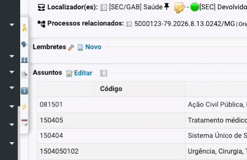
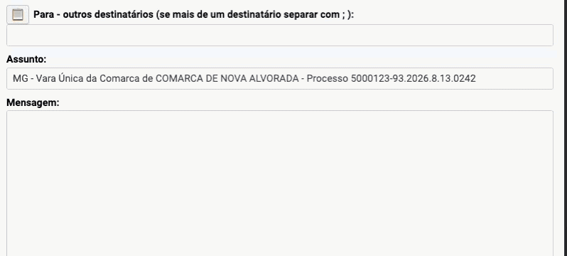
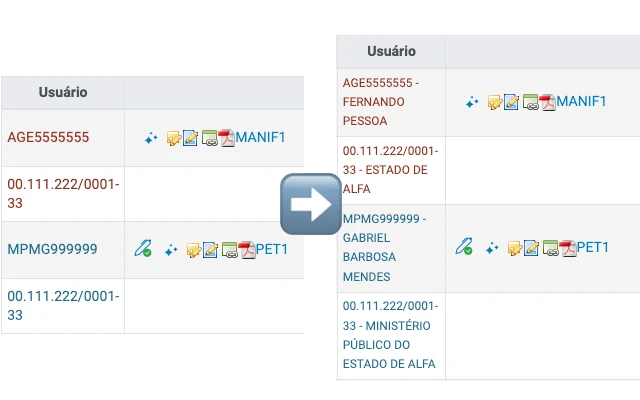
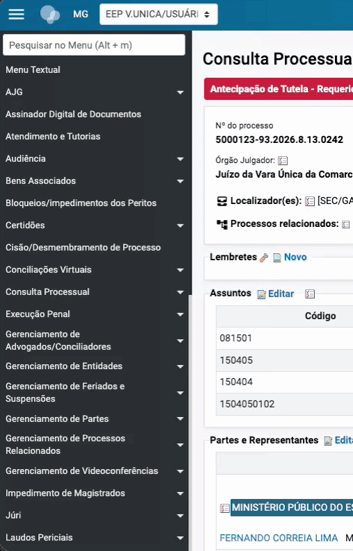
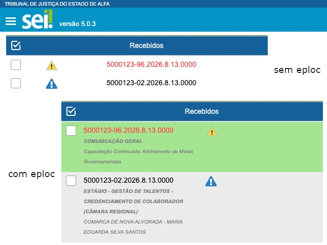

Veja o eploc em ação!
Galeria de Funcionalidades

Mini painel de atalhos contextuais

Histórico inteligente e sanitizador de e-mails

Exibição clara de nomes de usuários

Painel lateral fixo para consulta rápida
Auto-completar inteligente (Padrão CNJ)

Visualização horizontal mais descritiva no SEI
Pronto para usar em segundos
1. Clique aqui e instale a extensão diretamente da Chrome Web Store.
4. Acesse os sistemas (eproc, SEI, etc.) e clique no ícone da extensão para configurar quais melhorias você deseja ativar.
Termos de Uso
Independência e Responsabilidade
Esta extensão é uma ferramenta independente. NÃO possui vínculo, endosso ou homologação oficial com o Tribunal de Justiça de Minas Gerais (TJMG), o CNJ ou qualquer instituição do Poder Judiciário.
O desenvolvedor não se responsabiliza por falhas de exibição, erros de preenchimento ou por perda de prazos. É obrigação exclusiva do usuário conferir a exatidão de todos os atos realizados nos sistemas oficiais.
Privacidade (LGPD)
Em conformidade com a Lei Geral de Proteção de Dados, esta extensão funciona 100% localmente no seu navegador. Nenhuma informação de processos, senhas ou dados pessoais é enviada para servidores externos.